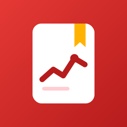

Tansiyon TakipPressure DiaryBlutdruck-TagebuchDiario de PresiónDiário de PressãoJournal de TensionDiario della PressioneДневник давленияЩоденник тискуDziennik ciśnieniaCatatan Tensiबीपी डायरीمفكرة ضغط الدم血圧手帳혈압 수첩Nhật ký huyết ápBloeddrukdagboek
Tansiyon günlüğü ve ilaç hatırlatıcı Blood pressure log and medication reminders Blutdruck-Protokoll und Medikamentenerinnerungen Registro de presión arterial y recordatorios de medicamentos Registro de pressão arterial e lembretes de medicamentos Suivi de la tension artérielle et rappels de médicaments Registro della pressione arteriosa e promemoria dei farmaci Дневник давления и напоминания о лекарствах Щоденник тиску та нагадування про ліки Dziennik ciśnienia i przypomnienia o lekach Catatan tekanan darah dan pengingat obat ब्लड प्रेशर डायरी और दवा रिमाइंडर مفكرة ضغط الدم وتذكيرات الأدوية 血圧の記録とお薬のリマインダー 혈압 기록과 복약 알림 Nhật ký huyết áp và nhắc uống thuốc Bloeddruklogboek en medicijnherinneringenTansiyon ölçümlerini saniyeler içinde kaydet, grafiklerle takip et, ilaçlarını zamanında hatırla ve doktorun için PDF rapor hazırla. Tüm verilerin yalnızca telefonunda saklanır.
- Büyük/küçük tansiyon, nabız, kol ve not ile ölçüm kaydı; kayıtları sonradan düzenleme
- 7, 30, 90 günlük trend grafiği ve ortalamalar
- İlaç hatırlatmaları; bildirimden tek dokunuşla "Aldım", "10 dk ertele" veya "Atla"
- Yanıtlanmayan doz için 30 dakika sonra tekrar hatırlatma
- İlaç stok takibi ve ilaç bitmeden uyarı
- Sabah ve akşam "tansiyonunu ölç" hatırlatıcısı
- Ana ekran widget'ı: son ölçüm ve sıradaki ilaç bir bakışta (Android)
- Önizlemeli PDF rapor, yedekleme ve geri yükleme
- 17 dilde: Türkçe, İngilizce, Almanca, İspanyolca, Portekizce, Fransızca, İtalyanca, Felemenkçe, Rusça, Ukraynaca, Lehçe, Endonezce, Vietnamca, Hintçe, Arapça, Japonca ve Korece
Bu uygulama bilgilendirme amaçlıdır; tıbbi teşhis veya tedavi önerisi sunmaz.
Log your blood pressure in seconds, follow trends on clear charts, never miss a dose with medication reminders, and create a PDF report for your doctor. All your data stays on your phone.
- Systolic, diastolic, pulse, arm and notes for every reading; edit readings later
- 7-, 30- and 90-day trend charts and averages
- Medication reminders with one-tap "Taken", "Snooze 10 min" or "Skip" from the notification
- A second reminder 30 minutes later if a dose is still unanswered
- Pill stock tracking with a refill reminder before you run out
- Morning and evening "check your blood pressure" reminders
- Home screen widget: last reading and next dose at a glance (Android)
- PDF report with preview, backup and restore
- Available in 17 languages, including Japanese, Korean, Arabic, Hindi and Vietnamese
For information only; the app does not provide medical diagnosis or treatment advice.
Erfasse deinen Blutdruck in Sekunden, verfolge Trends in übersichtlichen Diagrammen, verpasse dank Medikamentenerinnerungen keine Dosis mehr und erstelle einen PDF-Bericht für deinen Arzt. Alle deine Daten bleiben auf deinem Handy.
- Systolisch, diastolisch, Puls, Arm und Notizen für jede Messung; Messungen später bearbeiten
- Trenddiagramme und Durchschnittswerte über 7, 30 und 90 Tage
- Medikamentenerinnerungen mit „Eingenommen“, „In 10 Min. erinnern“ oder „Auslassen“ per Fingertipp direkt aus der Benachrichtigung
- Eine zweite Erinnerung 30 Minuten später, wenn eine Dosis noch unbeantwortet ist
- Tablettenvorrat verfolgen, mit Nachkauf-Erinnerung, bevor er aufgebraucht ist
- Erinnerungen morgens und abends: „Miss deinen Blutdruck“
- Startbildschirm-Widget: letzte Messung und nächste Dosis auf einen Blick (Android)
- PDF-Bericht mit Vorschau, Sicherung und Wiederherstellung
- Verfügbar in 17 Sprachen, darunter Niederländisch, Polnisch, Russisch, Japanisch und Koreanisch
Nur zu Informationszwecken; die App bietet keine medizinische Diagnose oder Behandlungsempfehlung.
Registra tu presión arterial en segundos, sigue su evolución en gráficos claros, no te saltes ninguna dosis gracias a los recordatorios de medicamentos y crea un informe PDF para tu médico. Todos tus datos se quedan en tu teléfono.
- Sistólica, diastólica, pulso, brazo y notas en cada medición; edita las mediciones más tarde
- Gráficos de evolución y promedios de 7, 30 y 90 días
- Recordatorios de medicamentos con "Tomada", "Posponer 10 min" u "Omitir" con un solo toque desde la notificación
- Un segundo recordatorio 30 minutos después si una dosis sigue sin respuesta
- Control de existencias de pastillas con un recordatorio de reposición antes de que se acaben
- Recordatorios de mañana y de noche para "medir tu presión arterial"
- Widget de pantalla de inicio: última medición y próxima dosis de un vistazo (Android)
- Informe PDF con vista previa, copia de seguridad y restauración
- Disponible en 17 idiomas, entre ellos japonés, coreano, árabe, hindi y vietnamita
Solo informativo; la app no ofrece diagnóstico médico ni consejos de tratamiento.
Registre sua pressão arterial em segundos, acompanhe as tendências em gráficos claros, nunca esqueça uma dose com os lembretes de medicamentos e crie um relatório em PDF para o seu médico. Todos os seus dados ficam no seu celular.
- Sistólica, diastólica, pulso, braço e anotações em cada medição; edite as medições depois
- Gráficos de tendência e médias de 7, 30 e 90 dias
- Lembretes de medicamentos com "Tomei", "Adiar 10 min" ou "Pular" com um toque direto na notificação
- Um segundo lembrete 30 minutos depois se uma dose ainda não tiver sido respondida
- Controle do estoque de comprimidos com lembrete de reposição antes que acabem
- Lembretes de manhã e à noite para "medir sua pressão arterial"
- Widget na tela inicial: última medição e próxima dose num relance (Android)
- Relatório em PDF com pré-visualização, backup e restauração
- Disponível em 17 idiomas, incluindo japonês, coreano, árabe, hindi e vietnamita
Apenas informativo; o app não fornece diagnóstico médico nem orientação de tratamento.
Notez votre tension artérielle en quelques secondes, suivez son évolution sur des graphiques clairs, n’oubliez plus aucune prise grâce aux rappels de médicaments, et créez un rapport PDF pour votre médecin. Toutes vos données restent sur votre téléphone.
- Systolique, diastolique, pouls, bras et notes pour chaque mesure ; modifiez vos mesures plus tard
- Graphiques d’évolution et moyennes sur 7, 30 et 90 jours
- Rappels de médicaments avec « Pris », « Rappel dans 10 min » ou « Ignorer » en un geste depuis la notification
- Un second rappel 30 minutes plus tard si une prise reste sans réponse
- Suivi du stock de comprimés avec un rappel de renouvellement avant d’être à court
- Rappels « Mesurez votre tension » le matin et le soir
- Widget d’écran d’accueil : dernière mesure et prochaine prise en un coup d’œil (Android)
- Rapport PDF avec aperçu, sauvegarde et restauration
- Disponible en 17 langues, dont le japonais, le coréen, l’arabe, le hindi et le vietnamien
À titre informatif uniquement ; l’application ne fournit ni diagnostic médical ni conseil de traitement.
Registra la pressione arteriosa in pochi secondi, segui l’andamento su grafici chiari, non saltare mai una dose grazie ai promemoria dei farmaci e crea un report PDF per il tuo medico. Tutti i tuoi dati restano sul tuo telefono.
- Sistolica, diastolica, battito, braccio e note per ogni misurazione; puoi modificare le misurazioni in seguito
- Grafici dell’andamento e medie a 7, 30 e 90 giorni
- Promemoria dei farmaci con “Presa”, “Posticipa 10 min” o “Salta” con un solo tocco dalla notifica
- Un secondo promemoria 30 minuti dopo se una dose è ancora senza risposta
- Monitoraggio della scorta di compresse con un promemoria per il rifornimento prima che finiscano
- Promemoria mattutini e serali per “misurare la pressione”
- Widget della schermata Home: ultima misurazione e prossima dose a colpo d’occhio (Android)
- Report PDF con anteprima, backup e ripristino
- Disponibile in 17 lingue, tra cui giapponese, coreano, arabo, hindi e vietnamita
Solo a scopo informativo; l’app non fornisce diagnosi mediche né consigli terapeutici.
Записывайте давление за секунды, следите за динамикой на понятных графиках, не пропускайте приём лекарств благодаря напоминаниям и создавайте PDF-отчёт для врача. Все ваши данные остаются на вашем телефоне.
- Верхнее и нижнее давление, пульс, рука и заметки для каждого измерения; измерения можно изменить позже
- Графики динамики и средние значения за 7, 30 и 90 дней
- Напоминания о лекарствах: «Принято», «Отложить на 10 мин» или «Пропустить» одним нажатием прямо из уведомления
- Повторное напоминание через 30 минут, если приём не отмечен
- Учёт запаса таблеток и напоминание пополнить его, пока они не закончились
- Утренние и вечерние напоминания «проверьте давление»
- Виджет на главном экране: последнее измерение и следующий приём с первого взгляда (Android)
- PDF-отчёт с предпросмотром, резервное копирование и восстановление
- Доступно на 17 языках, включая русский, украинский, японский и корейский
Только для информации; приложение не ставит диагноз и не даёт рекомендаций по лечению.
Записуйте тиск за секунди, стежте за динамікою на зрозумілих графіках, не пропускайте прийом ліків завдяки нагадуванням і створюйте PDF-звіт для лікаря. Усі ваші дані залишаються на вашому телефоні.
- Верхній і нижній тиск, пульс, рука та нотатки для кожного вимірювання; вимірювання можна змінити пізніше
- Графіки динаміки та середні значення за 7, 30 і 90 днів
- Нагадування про ліки: «Прийнято», «Відкласти на 10 хв» або «Пропустити» одним дотиком просто зі сповіщення
- Повторне нагадування через 30 хвилин, якщо прийом не позначено
- Облік запасу таблеток і нагадування поповнити його, доки вони не закінчилися
- Ранкові та вечірні нагадування «перевірте тиск»
- Віджет на головному екрані: останнє вимірювання та наступний прийом з першого погляду (Android)
- PDF-звіт з попереднім переглядом, резервне копіювання та відновлення
- Доступно 17 мовами, зокрема українською, японською та корейською
Лише для інформації; застосунок не ставить діагноз і не дає рекомендацій щодо лікування.
Zapisuj ciśnienie w kilka sekund, śledź zmiany na przejrzystych wykresach, nie pomijaj dawek dzięki przypomnieniom o lekach i twórz raport PDF dla lekarza. Wszystkie Twoje dane zostają w Twoim telefonie.
- Ciśnienie skurczowe i rozkurczowe, tętno, ręka i notatki przy każdym pomiarze; pomiary można później edytować
- Wykresy trendów i średnie z 7, 30 i 90 dni
- Przypomnienia o lekach z opcjami „Przyjęto”, „Przypomnij za 10 min” lub „Pomiń” jednym dotknięciem w powiadomieniu
- Drugie przypomnienie po 30 minutach, jeśli dawka nadal nie została oznaczona
- Śledzenie zapasu tabletek z przypomnieniem o uzupełnieniu, zanim się skończą
- Poranne i wieczorne przypomnienia „zmierz ciśnienie”
- Widżet na ekranie głównym: ostatni pomiar i następna dawka na pierwszy rzut oka (Android)
- Raport PDF z podglądem, kopia zapasowa i przywracanie
- Dostępna w 17 językach, w tym po polsku, japońsku i koreańsku
Wyłącznie w celach informacyjnych; aplikacja nie stawia diagnozy ani nie zaleca leczenia.
Catat tekanan darah dalam hitungan detik, pantau tren lewat grafik yang jelas, jangan lewatkan dosis berkat pengingat obat, dan buat laporan PDF untuk dokter Anda. Semua data Anda tetap di ponsel Anda.
- Sistolik, diastolik, denyut nadi, lengan, dan catatan untuk setiap pengukuran; pengukuran bisa diedit nanti
- Grafik tren dan rata-rata 7, 30, dan 90 hari
- Pengingat obat dengan "Sudah diminum", "Tunda 10 mnt", atau "Lewati" sekali ketuk langsung dari notifikasi
- Pengingat kedua 30 menit kemudian jika dosis belum ditandai
- Pelacakan stok pil dengan pengingat beli ulang sebelum habis
- Pengingat pagi dan malam untuk "cek tekanan darah"
- Widget layar utama: pengukuran terakhir dan dosis berikutnya sekilas (Android)
- Laporan PDF dengan pratinjau, cadangan, dan pemulihan
- Tersedia dalam 17 bahasa, termasuk Indonesia, Jepang, dan Korea
Hanya untuk informasi; aplikasi ini tidak memberikan diagnosis medis atau saran pengobatan.
सेकंडों में अपना ब्लड प्रेशर दर्ज करें, साफ़ ग्राफ़ में बदलाव देखें, दवा रिमाइंडर के साथ कोई खुराक न छोड़ें और अपने डॉक्टर के लिए PDF रिपोर्ट बनाएँ। आपका सारा डेटा आपके फ़ोन पर ही रहता है।
- हर रीडिंग के लिए ऊपर और नीचे का बीपी, पल्स, बाँह और नोट; रीडिंग बाद में बदली जा सकती है
- 7, 30 और 90 दिन के ग्राफ़ और औसत
- दवा रिमाइंडर: सूचना से ही एक टैप में "ले ली", "10 मिनट बाद" या "छोड़ें"
- खुराक दर्ज न होने पर 30 मिनट बाद दूसरा रिमाइंडर
- गोलियों का स्टॉक ट्रैक करें और खत्म होने से पहले रिमाइंडर पाएँ
- सुबह और शाम "बीपी जाँचें" रिमाइंडर
- होम स्क्रीन विजेट: आख़िरी रीडिंग और अगली खुराक एक नज़र में (Android)
- प्रीव्यू के साथ PDF रिपोर्ट, बैकअप और रीस्टोर
- हिंदी, अंग्रेज़ी, जापानी और कोरियाई सहित 17 भाषाओं में उपलब्ध
केवल जानकारी के लिए; यह ऐप चिकित्सीय निदान या इलाज की सलाह नहीं देता।
سجّل ضغط دمك في ثوانٍ، وتابع تغيّره في رسوم بيانية واضحة، ولا تفوّت أي جرعة بفضل تذكيرات الأدوية، وأنشئ تقرير PDF لطبيبك. تبقى جميع بياناتك على هاتفك.
- الضغط الانقباضي والانبساطي والنبض والذراع وملاحظات لكل قراءة؛ مع إمكانية تعديل القراءات لاحقًا
- رسوم بيانية ومتوسطات لـ 7 و30 و90 يومًا
- تذكيرات الأدوية مع "تم التناول" أو "تأجيل 10 دقائق" أو "تخطٍّ" بلمسة واحدة من الإشعار
- تذكير ثانٍ بعد 30 دقيقة إذا لم تُسجَّل الجرعة
- تتبّع مخزون الحبوب مع تذكير بإعادة الشراء قبل نفادها
- تذكيرات صباحية ومسائية "افحص ضغط دمك"
- أداة الشاشة الرئيسية: آخر قراءة والجرعة التالية بنظرة واحدة (Android)
- تقرير PDF مع معاينة، ونسخ احتياطي واستعادة
- متوفر بـ 17 لغة، منها العربية والإنجليزية واليابانية والكورية
للمعلومات فقط؛ لا يقدّم التطبيق تشخيصًا طبيًا أو نصائح علاجية.
血圧を数秒で記録し、わかりやすいグラフで変化を確認。お薬のリマインダーで飲み忘れを防ぎ、医師に見せるPDFレポートも作成できます。データはすべてスマホの中に保存されます。
- 測定ごとに上の血圧・下の血圧・脈拍・腕・メモを記録。あとから編集も可能
- 7日・30日・90日のグラフと平均値
- 通知から「飲んだ」「10分後に再通知」「スキップ」をワンタップ
- 未記録のお薬は30分後にもう一度お知らせ
- 残りの錠数を管理し、なくなる前に補充をお知らせ
- 朝と夜の「血圧を測りましょう」リマインダー
- ホーム画面ウィジェット：前回の測定と次のお薬をひと目で（Android）
- プレビュー付きPDFレポート、バックアップと復元
- 日本語、英語、韓国語など17言語に対応
参考情報です。本アプリは医学的な診断や治療の助言を行いません。
몇 초 만에 혈압을 기록하고, 보기 쉬운 그래프로 변화를 확인하고, 복약 알림으로 약을 놓치지 말고, 의사에게 보여 줄 PDF 보고서를 만드세요. 모든 데이터는 휴대폰에만 저장됩니다.
- 측정마다 최고·최저 혈압, 맥박, 팔, 메모 기록, 나중에 수정 가능
- 7일, 30일, 90일 그래프와 평균
- 알림에서 바로 "복용함", "10분 후 다시 알림", "건너뛰기"
- 표시하지 않은 복용은 30분 뒤에 한 번 더 알림
- 남은 알약 수를 관리하고 떨어지기 전에 알림
- 아침·저녁 "혈압을 재세요" 알림
- 홈 화면 위젯: 최근 측정과 다음 복용을 한눈에 (Android)
- 미리보기가 있는 PDF 보고서, 백업 및 복원
- 한국어, 영어, 일본어 등 17개 언어 지원
참고용입니다. 이 앱은 의학적 진단이나 치료 조언을 제공하지 않습니다.
Ghi huyết áp trong vài giây, theo dõi xu hướng qua biểu đồ rõ ràng, không bỏ lỡ liều thuốc nhờ lời nhắc, và tạo báo cáo PDF cho bác sĩ. Mọi dữ liệu đều nằm trên điện thoại của bạn.
- Số trên, số dưới, nhịp tim, tay đo và ghi chú cho mỗi lần đo; có thể sửa sau
- Biểu đồ xu hướng và giá trị trung bình 7, 30 và 90 ngày
- Nhắc uống thuốc với "Đã uống", "Nhắc lại sau 10 phút" hoặc "Bỏ qua" chỉ một chạm từ thông báo
- Nhắc lại sau 30 phút nếu liều thuốc chưa được đánh dấu
- Theo dõi số viên còn lại và nhắc mua thêm trước khi hết
- Lời nhắc đo huyết áp buổi sáng và buổi tối
- Tiện ích màn hình chính: lần đo gần nhất và liều tiếp theo (Android)
- Báo cáo PDF có xem trước, sao lưu và khôi phục
- Có 17 ngôn ngữ, gồm tiếng Việt, tiếng Anh, tiếng Nhật và tiếng Hàn
Chỉ để tham khảo; ứng dụng không chẩn đoán y khoa hay đưa ra lời khuyên điều trị.
Noteer je bloeddruk in een paar seconden, volg het verloop in duidelijke grafieken, mis geen dosis dankzij medicijnherinneringen en maak een PDF-rapport voor je arts. Al je gegevens blijven op je telefoon.
- Bovendruk, onderdruk, hartslag, arm en notitie bij elke meting; metingen later bewerken
- Grafieken en gemiddelden over 7, 30 en 90 dagen
- Medicijnherinneringen met "Ingenomen", "Over 10 min" of "Overslaan" met één tik vanuit de melding
- Een tweede herinnering na 30 minuten als een dosis nog niet is gemarkeerd
- Pillenvoorraad bijhouden met een herinnering voordat ze op zijn
- Herinneringen 's ochtends en 's avonds om je bloeddruk te meten
- Widget voor het startscherm: laatste meting en volgende dosis in één oogopslag (Android)
- PDF-rapport met voorbeeld, back-up en terugzetten
- Beschikbaar in 17 talen, waaronder Nederlands, Engels, Duits en Frans
Alleen ter informatie; de app stelt geen medische diagnose en geeft geen behandeladvies.
Gizlilik Politikası Privacy Policy Datenschutzerklärung Política de privacidad Política de Privacidade Politique de confidentialité Informativa sulla privacy Политика конфиденциальности Політика конфіденційності Polityka prywatności Kebijakan Privasi गोपनीयता नीति سياسة الخصوصية プライバシーポリシー 개인정보처리방침 Chính sách quyền riêng tư Privacybeleid · Kullanım Koşulları · Terms of Use · Nutzungsbedingungen · Condiciones de uso · Termos de Uso · Conditions d’utilisation · Condizioni d’uso · Условия использования · Умови використання · Warunki korzystania · Ketentuan Penggunaan · उपयोग की शर्तें · شروط الاستخدام · 利用規約 · 이용약관 · Điều khoản sử dụng · Gebruiksvoorwaarden